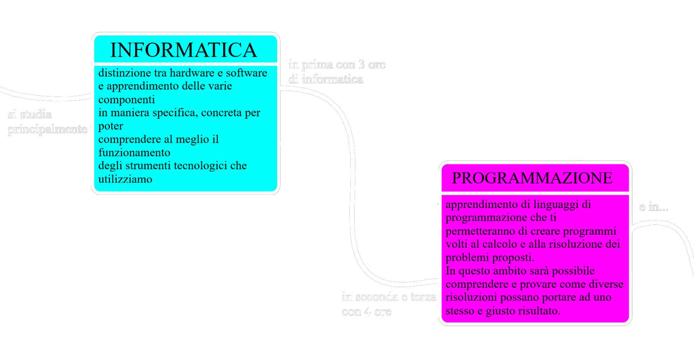

istemi
nformativi
ziendali
Hai un interesse per la tecnologia e per la risoluzione di problemi?
Ti ritieni una persona creativa?
[Per avere informazioni sulla classe prima SIA 4.0 Clicca qui]
I pilastri del corso sono l'economia aziendale e l'informatica, lo studio dell'informatica è ciò che la differenzia dagli altri corsi. Se le risposte alle prime due domande sono "si" il corso SIA potrebbe essere fatto per te, questo corso rispetto agli altri è incentrato sulle competenze riguardante il problem solving (=capacità di risoluzione dei problemi) e il ragionamento logico applicate all'economia aziendale. Aiuta i suoi studenti a raggiungere una formazione ricca e completa incline alla tecnologia e alle sue metodologia più attuali mantenendo anche il profilo economico aziendale, inoltre ti fornisce le basi per poter utilizzare la tecnologia in modo creativo e innovativo. I macroargomenti affrontati nel percorso informatico del Sia sono i seguenti:
